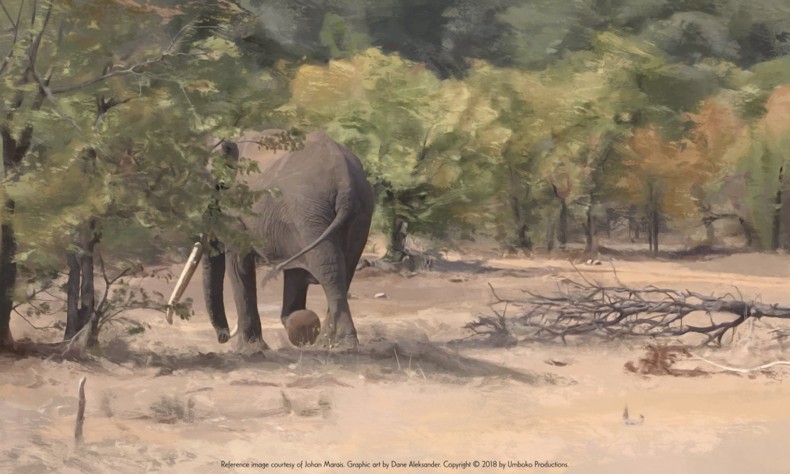

December 2018
Art of Last of the Big Tuskers
Dane Aleksander—wildlife painter in… Tembe, South Africa.
The (original) magnificent seven – all super-tuskers – roamed Kruger National Park in South Africa in the seventies and eighties. Each had ivory in excess of one-hundred pounds per side. Sadly, you would be hard-pressed to find a single hundred-pounder alive in Kruger today. In order to feature another magnificent seven in the documentary film: Last of the Big Tuskers (2018), the crew returned to Kruger and then travelled to Kenya to see the elephants of Amboseli National Park, Chyulu Hills National Park, Tsavo National Park and compared them to the last of the super-tuskers of Tembe.
Isilo, Tembe Elephant Park (digital painting, 2018)
Tusk Size: over 9 ft, 150 lbs. [1]
The flow of the paths, the grass, the trees, the pond, all leads to Isilo. The point of emphasis is on the tusks, and the color takes liberty within the compressed highlights and shadows that appear in the reference image as a subtle yellow or purple artifact on the red-ish elephant skin. This image artifact has been drawn upon to emphasize the royal crown of the ‘king-of-kings’. Tembe Elephant Park, South Africa, has a unique topography: a special sandforest that shares a border with Mozambique and that has an elephant population with very special characteristics—“a special genetic makeup to produce strong tuskers.” — Alois Haberhauer, Elephant Geneticist: University of Kriel
“From a genetics standpoint [the elephants in Tembe] are quite gifted, [though this has a lot to do] with the history of the area, that this must have been a very difficult area to hunt in the peak of the ivory trade, so that would have left a lot of these bulls alone[.] [The elephants in Tembe] were not hunted back then for their ivory. [The result is that there are] a lot more tuskers [per population size in Tembe] than anywhere in South Africa. Even [compared] to a place like Tsavo [National Park], which is a massive park with lots of elephants, they only have a handful of tuskers [per population size.] That is something quite special for Tembe.” — Leonard Muller, Elephant Monitor: Ezemvelo KZN Wildlife
Kamboyo, Tsavo Conservation Area (digital painting, 2018)
Tusk Size: 118 and 116 lbs. [2]
Masthulele, Kruger National Park (digital painting, 2018)
Tusk Size: 8 and 7.67 ft, 119 and 112 lbs. [3]
One Ton, Chyulu Hills National Park (digital painting, 2018)
Tusk Size: 8 and 6 ft, 115 and 90 lbs. [1]
Satao, Tsavo East National Park (digital painting, 2018)
Tusk Size: over 7 ft, 100 lbs. [1]
Tim, Amboseli National Park (digital painting, 2018)
Tusk Size: 9 and 7 ft, 135 and 125 lbs. [1]

Craig, Amboseli National Park (digital painting, 2018)
Tusk Size: 8 and 7 ft, 110 and 100 lbs. [1]
These digital paintings reference images of the seven elephants featured in Last of the Big Tuskers, a documentary film by James Currie. Limited edition archival pigment prints, numbered and signed by Dane Aleksander, can be purchased online at animathabitat.org/boutique/ with a percentage of the purchase price directed to support Big Life Foundation, Tembe Tusker Foundation and Tsavo Trust.
Last of the Big Tuskers (documentary film, 2018) is available on Vimeo on Demand.
1 Estimated measurements, per tusk.
2 Tsavo Trust measurements, per tusk.
3 Tuskers of Africa measurements, per tusk.